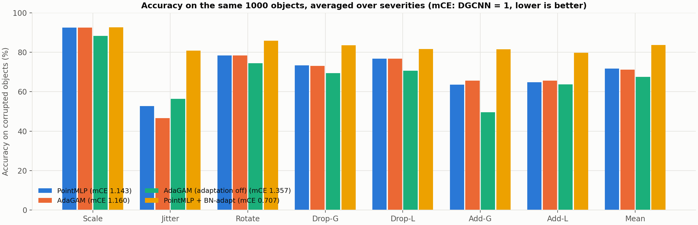

Two trained point-cloud classifiers running in your browser on corrupted 3D objects from ModelNet-C. PointMLP, PointMLP + AdaGAM, and the same AdaGAM with its adaptation switched off.
.xyz / .txt / .csv (x y z per line), ASCII .ply or .npy, at least 256 points. It is centred and scaled to fit a unit sphere, like ModelNet.
Classifies a 3D point cloud in four stages. Each stage picks anchor points, gathers 24 neighbours around each, normalises the neighbourhood and rescales it with a learned scale α and shift β. After training, α and β are the same fixed numbers for every neighbourhood of every object.
Lets each neighbourhood choose its own correction. A tiny MLP reads the neighbourhood's own statistics and predicts Δα and Δβ. It starts as an exact copy of PointMLP and adds 0.11% compute.
The third card runs the same trained AdaGAM with Δα and Δβ forced to zero. If the prediction changes, the adaptive part is what made the difference, for better or worse.
| Model (trained on clean data, 200 epochs) | Clean | mCE ↓ | Jitter | Rotate | Add-Global | Add-Global, sev 4 | Params |
|---|---|---|---|---|---|---|---|
| PointMLP | 92.8% | 1.131 | 53.3% | 78.1% | 64.0% | 34.2% | 13.24 M |
| PointMLP + AdaGAM | 93.0% | 1.147 | 46.7% | 78.9% | 66.6% | 42.3% | 13.42 M |
mCE: corruption error relative to DGCNN (lower is better), averaged over 7 corruptions × 5 severities. Overall the two models tie; AdaGAM wins clearly on severe outliers and loses on jitter.
